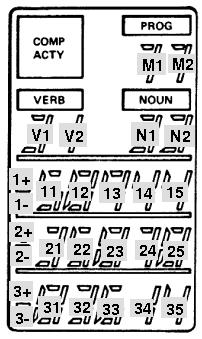
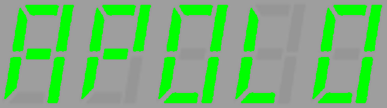
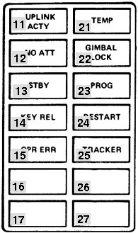

Contents
Contributing
Changes Back to the Virtual AGC Project
Most software provided by the Virtual AGC project, other than the
original AGC/AEA code, is provided under the terms of the GNU GPL
version 2 license. Under the provisions of the license, you
are free to modify and use the code however you like, for your own
use, but that if you redistribute the modified code you must make
the full modified source available to those receiving the binary
executables.
On the other hand, the GPL does not require you to contribute your
changes back to the Virtual AGC project itself. From my
standpoint, contributing the changes back is generally a good idea
as long as they do not cause any kind of regression. If you
develop any code with the intention of contributing it to the
Virtual AGC project, you should read about the desired characteristics of such
contributions and of your interactions with the project.
Interfacing yaAGC
to yaDSKY, yaAGS to yaDEDA, or Other Simulated Hardware, in
General
The method used by yaAGC or
yaAGS to interface to
virtual hardware, such as yaDSKY
or yaDSKY2, has been chosen
to be as generic as possible (to promote portability). For example,
the same method is used virtually unchanged on Linux, MS Windows,
and Mac OS X.
At the same time, the system is as modular as possible, with yaAGC and yaDSKY being separate standalone
programs running on the same computer or (theoretically) on
different computers. This promotes the possibility of changing or
even completely replacing yaDSKY—or
of
introducing new stand-alone programs for simulating other Apollo
hardware—without changing yaAGC
itself. In fact, this has already been done with such
alternative implementations as yaDSKY
and yaDSKY2.
In what follows I'll use the term "yaDSKY" to refer interchangeably
to yaDSKY and it replacement yaDSKY2,
"yaDEDA" to refer interchangeably to yaDEDA and yaDEDA2,
and "yaACA" to refer interchangeably to yaACA and yaACA2.
As
far as interoperability requirements are concerned, these
alternatives are drop-in replacements for each other.
yaAGC and yaDSKY are, respectively, a
server and client communicating with each other over an IP network
via the mechanism of sockets. At boot time, the yaDSKY client (or clients for
other simulated hardware) connects to the yaAGC server. The only necessity for a client
program representing a hardware simulation is to be able to connect
to the corrrect port on the server, and to communicate input or
output data in an acceptable format. (But the socket interface
could be replaced with relatively little effort—say, to a
shared-memory interface. See below.)
The real AGC received input from hardware, or outputted control
signals to hardware, by means of instructions which accessed "i/o
channels" in distinction to main memory. yaAGC mimics this behavior by simply translating
"output channel" assembly-language instructions to server
broadcasts, and by making data received from clients available to
subsequent "input channel" assembly-language instructions. Except
for a few i/o channels that correspond to known functionality within
the AGC itself, yaAGC can
thus interact with simulated hardware in a completely generic way,
without assigning any interpretation to the data other than the
interpretations assigned by the Luminary,
Colossus, or other Apollo
software being executed by it.
This method does impose certain response-time limitations on AGC
i/o, but does not impose any practical bandwidth limitation.
By default, the yaAGC
server listens for new connections on ports 19697-19706. (This can
be changed by a command-line switch in invoking yaAGC.) Similarly, hardware
simulations like yaDSKY
attempt to connect to port 19697 at boot time. By default, the
clients assume that the server is running on the same machine as
they are (i.e., on "localhost"), but are able to change their
assumptions about the server's IP address and about the port number
with command-line switches.
This socket mechanism is almost completely generic at the
application-programmer's level, and has been chosen for precisely
that reason. In other words, it can be used on UNIX-like systems and
on Microsoft Windows almost without change. For more information,
I'd suggest looking at the yaAGC
source code, and (if you develop in a UNIX-like environment) at `man
2 socket', `man 2 send', `man 2 recv', etc. Or, look at the
helpfiles in the Win32 SDK. Essentially the only differences between
Linux and Win32 versions involve initialization of the socket
system, and of configuring the communication to be non-blocking.
Using LM
Hardware-Simulation Programs with Multiple AGCs or the AGS
Note that some of the LM hardware could be placed under control of either the LM AGC or the CM
AGC; also, the two AGCs could be interconnected to exchange the
setup-data of the two. To simulate such a situation, it will (of
course) be necessary to run two copies of yaAGC simultaneously, at different port addresses.
Simulation software for such hardware will obviously want to connect
to both yaAGC servers, and
to apply some rationale as to which of them to listen to at any
given time. Since I don't presently plan to personally implement such
additional simulations, the details are left as an exercise to the
reader.
However, to avoid conflict or confusion among developers, I would
suggest the following default
use of ports:
- CM AGC (yaAGC acting
as a server): Listens to ports 19697-19706.
- Commander's DSKY (yaDSKY
acting as client): Port 19697.
- Navigation DSKY (yaDSKY
acting as client): Port 19698.
- LM AGC (yaAGC acting
as client): Port 19699.
- Mission control (yaTelemetry
acting as client): Port 19700.
- IMU: Port 19701.
- AOT: Port 19702.
- VirtualAGC digital
uplink: Port 19706.
- LM AGC (yaAGC acting
as a server): Listens to ports 19797-19806.
- DSKY (yaDSKY acting
as client): Port 19797.
- Mission control (yaTelemetry
acting as client): Port 19800.
- IMU: Port 19801.
- AOT: Port 19802.
- ACA: Port 19803.
- AGS (yaAGS acting as
a client): Port 19804.
- VirtualAGC digital
uplink: Port 19806.
- LM AGS (yaAGS acting
as a server): Listens to ports 19897-19906
- DEDA (yaDEDA acting
as client): Port 19897.
- VirtualAGC digital
uplink: Port 19906.
Note that for the case of communication between the AGC and AGS, it
is necessary to use either yaAGC
socket protocol or yaAGS
socket protocol to exchange data. We choose in this case to
allow yaAGS to use yaAGC protocol. A similar
situation may arise where the AGC and AGS use the same peripheral
device—for example, receiving the same gimbal-angle
increment/decrement pulses. Rather than forcing the peripheral
device to output the same data in two different protocols, it is
more reasonable for yaAGS
simply to interpret yaAGC
protocol.
Obviously, suggestions for improvement are welcomed.
Use of yaAGC as
Embedded Software
This is quite simple, in principle. If your embedded system is
running a POSIX-compliant operating system, you can just go ahead
and run yaAGC. And
since the Raspberry Pi have become ubiquitous, and cheap, and
usually run a version of Linux anyway, this is frankly the preferred
embedded solution for most people. Including me!
If not — if,
for example, you have no operating system and want to run a "bare
metal" version of yaAGC — here's what you need to
do:
Provide replacements for the send
and recv functions, so
that when yaAGC issues
these commands, the appropriate hardware is controlled. Also,
provided stubs for other socket-related functions like socket, so that they don't
do anything. Alternately, replace the ChannelInput, ChannelOutput, and ChannelRoutine functions,
as described below.
Instead of using the main program provided with yaAGC, you'll instead use
libyaAGC.a as a library and provide your own main function. Provide
startup code to initialize any hardware peripherals you're
providing, and to issue timer interrupts every 11.7 μs. Your
own main function doesn't really need to do any more than this.
Upon receiving a timer interrupt, vector to the agc_engine function. This
will result in one AGC memory cycle occurring every 11.7 μs.,
and of the simulated software (Luminary,
Colossus, or whatever)
issuing send or recv commands (or ChannelOutput and ChannelInput commands) to
interact with whatever hardware you've provided.
send/recv Protocol
As mentioned above, yaAGC
and yaAGS send data to
simulated hardware using the send
function, and the simulated hardware receives it using the recv function and vice
versa. Every write to an "output channel" by the AGC or AGS results
in a send. (Or, to
improve bandwidth by reducing overhead, multiple output-channel
writes can be ganged into a single send.) It only remains to understand the format
of the transmitted data. If for some reason you can't abide
this approach, replace the ChannelInput,
ChannelOutput, and ChannelRoutine functions as
described below to eliminate the socket-based interface.
yaAGC
vs.
yaAGS Packets
The yaAGC and yaAGS programs each use a system
of 4-byte packets for i/o. The packets of the two programs are
distinguishable by the two-bit "signatures" that appear in the
most-significant bits of each byte. Therefore, both types of
packets can appear on the same socket connection, without fear of
misinterpretation. This is important, for example, on the
socket connection by which the yaAGC
and yaAGC intercommunicate.
The signature bits of a yaAGC
packet look like
00xxxxxx 01xxxxxx 10xxxxxx 11xxxxxx
whereas the signature bits of a yaAGS
packet look like
00xxxxxx 11xxxxxx 10xxxxxx 01xxxxxx
Obviously there is some room here for defining additional types of
packets in the future, just by insuring that the 00 signature byte
always comes first, and rearranging the other three signature
bytes. Note also that in order to determine whether connected
peripheral clients (such as the DSKY) have disconnected, yaAGC/yaAGS
occasionally "ping" all of the connected clients, using abnormal
packets of the form
11111111 11111111 11111111 11111111 (or
just a single
11111111 for older versions)
It's occasionally useful in program develop to capture the data
streams. I'm sure there are many tools for doing so.
On Linux, I find the socat and hexdump tools to
be useful. For example, to capture the datastream being
emitted from yaAGC as configured with the ports usually
used for the LM, I find the following command helpful:
socat TCP:127.0.0.1:19799 | hexdump -C
yaAGS packets and yaAGC packets are further
defined in the following sections.
Packets for
Socket Implementation of AGS I/O System
Packets input or output by yaAGS
for implementation of the i/o system are of the form, as represented
in bits:
00tttttt 11dddddd 10dddddd 01dddddd
The field tttttt
represents the type of the packet (00-77 octal), whereas the 18-bit
field dddddddddddddddddd
represents the packet's data.
Specifically, the tttttt
field is interpreted as follows (all numbers in octal):
| tttttt |
I/O
Direction
|
I/O
Address
|
Significant Bits
|
Interpretation
|
00
|
Input (to CPU)
|
2001
|
15
|
PGNS theta integrator.
|
01
|
Input |
2002
|
15
|
PGNS phi integrator.
|
02
|
Input |
2004
|
15
|
PGNS psi integrator.
|
03
|
Input |
2010
|
n/a
|
(Not used)
|
04
|
Input |
2020
|
8 + 8
|
Discrete Input Word
1. The bit positions are as follows. Note that
only the bits labeled "discrete" actually appear in the i/o
register at address 2020. The bits labeled "mask" are
used to indicate which of the "discrete" bits are
valid. In other words, the only bits of i/o register
2020 that change are those with a "mask" of 1. The
bits with a mask of 0 do not change. This scheme is
used because different peripheral devices, connected to the
CPU on different sockets, may control different
discretes. Thus, several different peripherals might
send the CPU Discrete Input Word 1 packets, each affecting
only the bits of i/o register that are specifically under
their control, without any conflict.
Note: The
discrete inputs are active when 0 and inactive when 1.
The mask bits are active when 1 and inactive when 0.
Bitmask
(octal)
|
Interpretation
|
| 200000 |
Downlink Telemetry
Stop discrete. Note that yaAGS will automatically
activate this flag when a downlink telemetry
word is received, so there is no need to set it
separately.
|
| 100000 |
Output Telemetry
Stop discrete
|
| 040000 |
Follow-Up discrete
|
| 020000 |
Automatic discrete
|
| 010000 |
Descent Engine On
discrete
|
| 004000 |
Ascent Engine On
discrete
|
| 002000 |
Abort discrete
|
| 001000 |
Abort Stage
discrete
|
000200
|
Downlink Telemetry
Stop mask
|
000100
|
Output Telemetry Stop
mask
|
000040
|
Follow-Up mask
|
000020
|
Automatic mask
|
000010
|
Descent Engine On
mask
|
000004
|
Ascent Engine On mask
|
000002
|
Abort mask
|
000001
|
Abort Stage mask
|
|
05
|
Input |
2040
|
7 + 7
|
Discrete Input Word
2. The bit positions are as follows. The "mask"
bits vs. the "discrete" bits are explained above.
Note: The
discrete inputs are active when 0 and inactive when 1.
The mask bits are active when 1 and inactive when 0.
Bitmask
(octal)
|
Interpretation
|
| 200000 |
GSE Discrete 1 |
100000
|
GSE Discrete 2 |
| 040000 |
GSE Discrete 3
|
| 020000 |
DEDA Clear
discrete
|
| 010000 |
DEDA Hold discrete
|
| 004000 |
DEDA Enter
discrete
|
| 002000 |
DEDA Readout
discrete
|
000200
|
GSE mask 1
|
000100
|
GSE mask 2
|
000040
|
GSE mask 3 |
000020
|
DEDA Clear mask
|
000010
|
DEDA Hold mask
|
000004
|
DEDA Enter mask
|
000002
|
DEDA Readout mask
|
|
06
|
Input |
2100
|
n/a
|
(Not used)
|
07
|
Input |
2200
|
4
|
DEDA
|
10
|
Input |
6001
|
n/a
|
(Not used)
|
11
|
Input |
6002
|
11
|
delta-integral-q
counter. This register is automatically reset after
being read by the CPU (with an INP instruction).
|
12
|
Input |
6004
|
11
|
delta-integral-r
counter. This register is automatically reset after
being read by the CPU (with an INP instruction). |
13
|
Input |
6010
|
11
|
delta-integral-p
counter. This register is automatically reset after
being read by the CPU (with an INP instruction). |
14
|
Input |
6020
|
11
|
delta-Vx
counter. This register is automatically reset after
being read by the CPU (with an INP instruction). |
15
|
Input |
6040
|
11
|
delta-Vy
counter. This register is automatically reset after
being read by the CPU (with an INP instruction). |
16
|
Input |
6100
|
11
|
delta-Vz
counter. This register is automatically reset after
being read by the CPU (with an INP instruction). |
17
|
Input |
6200
|
18
|
Downlink Telemetry.
After this register is read by the CPU (with an INP instruction),
the Downlink Telemetry Stop discrete (see above) is
automatically reset. |
20
|
Output (from CPU)
|
2001
|
10
|
sin theta. Can be
negative (requires sign-extension to full 18-bit value). |
21
|
Output |
2002
|
10
|
cos theta. Can be
negative (requires sign-extension to full 18-bit value). |
22
|
Output |
2004
|
10
|
sin phi. Can be
negative (requires sign-extension to full 18-bit value). |
23
|
Output |
2010
|
10
|
cos phi. Can be
negative (requires sign-extension to full 18-bit value). |
24
|
Output |
2020
|
10
|
sin psi. Can be
negative (requires sign-extension to full 18-bit value). |
25
|
Output |
2040
|
10
|
cos psi. Can be
negative (requires sign-extension to full 18-bit value). |
26
|
Output |
2100
|
n/a
|
(Not used)
|
27
|
Output |
2200
|
4
|
DEDA
|
30
|
Output |
6001
|
10
|
Ex. Can
be negative (requires sign-extension to full 18-bit value). |
31
|
Output |
6002
|
10
|
Ey. Can
be negative (requires sign-extension to full 18-bit value). |
32
|
Output |
6004
|
10
|
Ez. Can
be negative (requires sign-extension to full 18-bit value).
|
33
|
Output |
6010
|
15
|
Altitude, Altitude
Rate. Can be negative (requires sign-extension to full
18-bit value).
|
34
|
Output |
6020
|
9
|
Lateral Velocity.
Can be negative (requires sign-extension to full 18-bit
value).
|
35
|
Output |
6040
|
n/a
|
(Not used)
|
36
|
Output |
6100
|
18
|
Output Telemetry Word
2. The full "Output Telemetry Word" is a 24 bit value,
comprising "Output Telemetry Word 1" and "Output Telemetry
Word 2". Bits 0-17 are stored in Output Telemetry Word
2 and bits 6-23 are stored in Output Telemetry Word 1, so
there is some overlap between the two. These
overlapping fields are supposed to be logically-OR'd
together.
|
37
|
Output |
6200
|
18
|
Output Telemetry Word
1. (See above.)
|
40
|
Output
|
24XX
25XX
26XX
30XX
64XX
70XX
|
11
|
Output discretes.
This is a combination
of all discretes output by the CPU. The packet is
output any time one of the discretes changes state
internally to the CPU, which is any time i/o occurs to one
of the associated i/o addresses. The output discretes
are mapped into the output word as follows, in terms of the
bits that represent their states.
Note: To
be consistent with the discrete inputs (above), these bits
are 0 when active and 1 when inactive.
Bitmask
(octal)
|
Discrete
|
Address
for
Set
|
Address
for
Reset
|
000001
|
Ripple Carry
Inhibit
|
2410
|
3010
|
000002
|
Altitude
|
2420
|
3040*
|
000004
|
Altitude Rate
|
2440
|
3040
|
000010
|
DEDA Shift In
|
2500
|
n/a**
|
000020
|
DEDA Shift Out
|
2600
|
n/a**
|
000040
|
GSE Discrete 4
|
6401
|
7001
|
000100
|
GSE Discrete 5
|
6402
|
7002
|
000200
|
GSE Discrete 6
|
6404
|
7004
|
000400
|
Test Mode Failure
|
6410
|
7010
|
001000
|
Engine Off
|
6420
|
7020
|
002000
|
Engine On
|
6440
|
7040
|
*The Altitude discrete is documented as being
reset by writing to i/o address 3040, but it's easy
to come to the conclusion that that's a misprint,
and that 3020 is the correct address. I don't
think it's a misprint. I think 3040 is
correct.
|
**These outputs are automatically reset by the
CPU, and therefore it is assumed that they are
always inactive unless specifically seen to be
active.
|
|
The input registers marked as "counters" or "integrators" don't
receive their values directly from the date fields of the i/o
packets. Rather, the packet's data field contains a code that
indicates the kind of operation to be performed, as follows.
Note that the difference between the "integrators" and "counters" is
that counters merely increment (by one), whereas "integrators" can
be zeroed or can count up or down (by one).
| 0 |
Clears the register |
1
|
Increments the register |
777777 (-1)
|
Decrements the register |
We actually implement this so that 0 clears the register, but any
other value simply adds to the register. (The value will be
automatically scaled so that increments of +/-1 automatically apply
at the least-significant bit of the counter or integrator register,
regardless of how many bits of precision the register has.
Working
with
the DEDA
Working with the DEDA is somewhat trickier from a developer's
standpoint than working with the DSKY. The DSKY is simply a
dumb terminal, so every depression of a key generates a message to
the CPU, and every lighting of an indicator or a digit is the direct
response of the DSKY to a message from the CPU. The DEDA is
more complex, and contains more intelligence than the DSKY. It
is more similar to a terminal that buffers entire lines of
data. To avoid data loss, it is strongly advised to follow
this paradigm if you want to implement your own DEDA or a
replacement for the socket interface.
Let's consider the interaction between the true AEA and DEDA (as
opposed to yaAGS and yaDEDA).
The first thing to know about the AEA-DEDA interaction is that data
is not spontaneously transferred between the AEA and DEDA.
(Actually, depression of the CLR key or the HOLD key is immediately
communicated to the CPU, so we won't worry about those simple cases
any further.) Every 4-bit transfer, in either direction, is
triggered explicitly by the program running in the AEA as follows:
- To output 4 bits of data, the software loads data into the
DEDA shift register (i/o address 2200) and then the DEDA Shift
Out discrete bit is set (software outputs anything to i/o
address 2600). The DEDA Shift Out bit is automatically
reset without any action by the software. The shift
operation takes 80 microseconds to complete, so the DEDA shift
register and DEDA Shift Out/In bits shouldn't be messed with for
80 microseconds.
- To input 4 bits of data, the software sets the DEDA
Shift In discrete bit (software outputs anything to i/o address
2500), waits for the shift operation to complete (80
microseconds), and then reads data from the DEDA shift register
(i/o address 2200). The DEDA Shift In bit is automatically
reset without any action by the software.
Next, you should know that no data transfers between the AEA and
DEDA are actually 4-bits long, so each transfer consists of a packet
of the 4-bit transfers described above. There are three types
of data transfers between the AEA and DEDA:
- Transfer of a 3-octal-digit address from the DEDA to the
AEA. From the user standpoint, the following key sequence
is used: CLEAR OctalDigitOctalDigit OctalDigit READOUT.
The DEDA buffers the 3-octal-digit address and causes the digits
to appear in the 3-digit top display. It is the appearance
of the DEDA Readout discrete input that triggers the AEA
software to ask for three 4-bit transfers to input the
data. The digits of the address are transmitted in the
left-to-right order, and are encoded as you might expect:
0000 for '0', 0001 for '1', 0010 for '2', and so on.
- Transfer of a 3-octal-digit address plus 5-signed-digit data
from the DEDA to the AEA. From the user standpoint, the
following key sequence is used: CLEAR OctalDigit OctalDigit OctalDigit +/- Digit Digit Digit Digit Digit ENTR. Either
octal or decimal digits may be used; the AEA software will
determine the interpretation of the data (octal vs. decimal) on
the basis of the 3-octal-digit address. This DEDA
automatically mirrors the address and data into the top 3-digit
display and bottom 5-digit (plus sign) display as it is
entered. It is the appearance of the DEDA Enter discrete
input that triggers the AEA software to ask for the nine 4-bit
transfers to input the data. The numerical data is coded
as you might expect. The '+' sign is encoded as 0 and the
'-' sign is encoded as 1.
- Transfer of a 3-octal-digit address plus 5-signed-digit data
from the AEA to the DEDA. When the DEDA receives this
data, it simply overwrites the numerical displays. The
data is encoded exactly as described in #2 above. A binary
code of 1111 may appear in place of any digit or the +/- sign,
and indicates that that digit of the display is blanked.
The AEA has no way to set the OPR ERR indicator. This is
handled by the intelligence of the DEDA itself. Any
key-sequence by the astronauts other than #1 or #2 above will cause
the OPR ERR to light. When the OPR ERR lamp is lit, any
subsequent data transfers to the AEA via the DEDA shift register are
1111, which is not a legal value otherwise. The OPR ERR lamp
is cleared only by hitting the CLEAR key.
Now let's consider how this affects emulation of the CPU and the
DEDA. The problem which this causes us is that it is very
difficult to meet the timing constraints if the yaAGS-to-yaDEDA interaction closely
models what has been described above. There is only an 80
microsecond window from the time the CPU requests DEDA
shift-register data, and the time that data must be available to the
CPU. This sounds as if it is a problem with the socket
interface, but actually it is a problem with the fact that yaAGS and yaDEDA are separate programs,
probably running on the same physical CPU. It is therefore
necessary to buffer incoming yaDEDA
data within the yaAGS
program, and to provide the interactions described within the yaAGS program, between the CPU
and the buffer. Because I implemented yaDEDA prior to
realizing that this was a problem, the interaction between the yaAGS data buffer and yaDEDA also uses this same
sequence of operations. This explanation seems rather
incoherent to me, but I can't think of a better way to describe it
right now; I'll try to improve the description later.
Packets for
Socket Implementation of AGC I/O System
The format is quite simple: each data packet consists of 4 bytes,
arranged in bit-fields as follows (in order of transmission):
00utpppp 01pppddd 10dddddd 11dddddd
The AGC theoretically use i/o-channel addresses from 0-511
(decimal), so a 9-bit code would uniquely identifies any i/o port.
It turns out that a much smaller range i/o-channel addresses was
actually used, so we provide merely an 7-bit code ppppppp for identifying the
i/o port. Similarly, dddddddddddddddd
is the 15-bit data code. In all cases, the most-significant bit is
the leftmost one. The LM used only channels 0-35 (octal). I've
not yet found a comprehensive list of CM i/o channels; if such a
list extends beyond 0-177 (octal), then this scheme will
have to be altered. (But that seems unlikely.)
The bit t is always
zero for i/o channel operations. However, the CPU receives
additional inputs that cannot be accessed via i/o channel
operations. These additional inputs are signals from the
spacecraft, which the CPU's "hardware" interprets as requests to
automatically alter its various counter registers. We set t=1 to indicate a packet
that represents such a counter-modification request signal. In
this case, ppppppp
represents the counter number (which should be in the range 32-60
octal), and dddddddddddddddd
is the type of "unprogrammed sequence" which should be applied to
the counter. (Admittedly, the allowable counter registers and
unprogrammed-sequence operations that apply to them should be
incorporated into yaAGC,
but since I'm not sure yet what they all are, I provide this
more-flexible approach instead.) For a list of the available
counter registers and the list of available "unprogrammed
sequences", refer to the CPU
Architecture
section of the assembly-language manual.
Numerically, unprogrammed sequences are represented as follows:
Unprogrammed
Sequence
|
dddddddddddddddd
(octal) |
Comment
|
PINC
|
000
|
|
PCDU (slow)
|
001
|
(20051017 and later.)
If the target counter is CDUX, CDUY, or CDUZ, yaAGC buffers these
commands and applies them to the counter at a rate of 400
counts per second.
|
MINC
|
002
|
|
MCDU (slow)
|
003
|
(20051017 and later.)
If the target counter is CDUX, CDUY, or CDUZ, yaAGC buffers these
commands and applies them to the counter at a rate of 400
counts per second. |
DINC
|
004
|
|
SHINC
|
005
|
|
SHANC
|
006
|
|
INOTRD
|
007
|
|
INOTLD
|
010
|
|
FETCH
|
011
|
|
STORE
|
012
|
|
GOJ
|
013
|
|
TCSAJ
|
014
|
|
POUT
|
015
|
|
MOUT
|
016
|
|
ZOUT
|
017
|
|
n/a
|
020
|
|
PCDU (fast)
|
021
|
(20051017 and later.)
If the target counter is CDUX, CDUY, or CDUZ, yaAGC buffers these
commands and applies them to the counter at a rate of 6400
counts per second. |
n/a
|
022
|
|
MCDU (fast)
|
023
|
(20051017 and later.)
If the target counter is CDUX, CDUY, or CDUZ, yaAGC buffers these
commands and applies them to the counter at a rate of 6400
counts per second. |
(As an example, the CPU might receive a DINC message for a
certain counter, which would cause it to update the counter,
which might cause it to output a POUT message indicating that the counter
was still positive, none of which would be under program
control.)
The bit u is covered
in the following section. For i/o-channel operations by the CPU, or
for counter-pulse inputs, this bit is 0.
As many 4-byte packets as desired may be packed into a single send.
Of course, this must be done judiciously: you have to ask yourself,
for example, what the yaAGC
is likely to do if receives within a single transmission both a
packet indicating that a given input signal is turned on and another
packet saying it has now been turned off.
The same protocol is used by the client as by the server, since
there is no possibility of confusing data from the two.
Though it isn't really a significant point, since yaAGC is long past the point of
being used in a high-reliability environment, the protocol has been
designed to be fairly robust: it is always possible to distinguish
the ordering of bytes within a packet (in case bytes are lost in
transmission), so that corrupted packets can in some cases be
discarded.
yaAGC
Input-Channel
Bitmasks
The bit u in the send/recv protocol doesn't
relate to anything in the AGC, but rather addresses a potential flaw
in the socket-based scheme for interconnecting the various
simulations.
Consider the following possibility. Suppose that two or more
hardware-simulation programs communicate with the yaAGC, but that one of the
input channels is used by two different hardware-simulations. In
other words, suppose that there are input channels for which some of
the bit positions are controlled by one of the hardware simulations,
while other of the bit positions are controlled by another of the
hardware simulations.
As a concrete example, consider LM input channel 32 (octal). Bit 14
of that channel indicates that the PROCEED key is pressed (which
would relate to the DSKY simulation), whereas bit positions 1-10
relate to engines (and not the DSKY simulation; let's say that they
relate to an "engine simulation"). Now, we don't want messages from
yaDSKY on channel 32 (octal)
to affect these engine bits, nor do we want messages from the engine
simulation to affect the PROCEED-key bit.
The workaround for this problem is to allow the various hardware
simulations to optionally send yaAGC
a bitmask for each channel, telling yaAGC which bit positions of the channel it intends
to affect. Whenever yaAGC
receives an input-channel message from a hardare simulation, it
applies the bitmask to the data, and only looks at the data bits
that correspond to that bitmask.
A hardware simulation informs yaAGC
of a desired bitmask by transmitting a message with u=1. Such a message does
not convey input-channel data; rather, it sets the bitmask for
channel ppppppp to ddddddddddddddd. The
bitmask is specific to the hardware simulation transmitting it only,
and stays in effect forever—or at least until another message with u=1 is received for that
channel. So typically, the hardware simulation would want to
transmit the bitmasks just once, immediately upon connecting to yaAGC. However, they could
theoretically be sent prior to every message.
By default, all bitmasks are 77777 (octal), meaning that every
hardware simulation is capable of affecting every bit-position in
every input channel it chooses to transmit. If the socket connection
between a hardware simulation and yaAGC
is broken, so that the hardware simulation program needs to
reconnect, the bitmasks for that socket are all reset to the
default, and therefore need to be resent by the hardware simulation
upon reconnection.
In terms of the concrete example described above, yaDSKY would want to set a
bitmask of 20000 (octal) for channel 32 (octal), to limit its
effects to bit 14, while a LM engine simulation would want to set a
bitmask of 01777 (octal) for that channel, to limit its
effects to bits 1-10.
Finally, note that packets transmitted by yaAGC always have u=0. It is expected that the individual
hardware simulations are clever enough to figure out for themselves
which bits of the output channels are applicable.
Fictitious
I/O
Channels
For the purpose of communicating various types of information
to/from yaAGC which do not
fall under the classification of true i/o channels or counter
registers, I've invented various fictitious i/o channels that exist
only within yaAGC and do
not exist in the true AGC. These fictitious i/o channels are
listed in the table below.
I/O Channel Address (octal)
|
Input/Output
|
Description
|
0177
|
Output from CPU
|
Used for simulating the
3200 pulse-per-second signal emitted by the CPU for torquing
the gyro during IMU fine alignment. Described fully in
the discussion of i/o channel 014 below.
|
0176
|
Output from CPU
|
Used for simulating the
3200 pulse-per-second signal emitted by the CPU in response
to counts placed in the CDUZCMD counter register (052)
during IMU coarse alignment. Described fully in the
discussion of i/o channel 014 below. |
0175
|
Output from CPU
|
Same, but for CDUYCMD
(051).
|
0174
|
Output from CPU
|
Same, but for CDUXCMD
(050).
|
0173
|
Input to CPU
|
This is for simulating
the digital uplink. The data payload of input channel
0173 is deposited directly in the INLINK counter register
(045), and at the same time an UPRUPT interrupt is
triggered. Valid data has one of the following
bit-patterns:
00000 00000 00000
or
ccccc CCCCC ccccc
where CCCCC
indicates the logical complement of ccccc. (In
other words, the 15-bit data contains 3 copies of the same
5-bit field, one of which is complemented.) The
all-zero pattern is used by the ground-station for clearing
the INLINK register after detection of error. In the
other pattern, the ccccc
field is supposed to be one of the values used by the DSKY
for communicating keystrokes to the AGC. (Refer to the
discussion of input channel 015 below.) That is to
say, the ground-station sends data to the AGC in the form of
DSKY keystrokes which have been redundantly encoded to aid
error-detection.
Incidentally, for experimentation, the yaDSKY program has a
setting (--test-uplink) which causes it to communicate
keystrokes to yaAGC
via the digital uplink rather than its normal channel 015.
Note: No
similar mechanism is needed for telemetry downlinks, because
downlinks are already handled perfectly well by the normal
CPU output-channel mechanism. Output channel 013, bit
7, contains the "downlink telemetry word order bit", output
channel 034 contains the first downlink telemetry data word,
and output channel 035 contains the second downlink
telemetry data word. These three items together
comprise the 31 bits for each downlinked word. (The
real AGC added parity bits and filler bits to form 40 bits
of data, but those are pretty irrelevant to the simulated
CPU.) Transfer of the LM state-vector to the AEA (P47)
is also handled by this mechanism. I'm not sure yet
how transfer of the state-vector between the CM AGC and the
LM AGC (V66) is handled; I'm beginning to think it was
downlinked to a ground station, translated, and then
uplinked.
|
0172
|
Output
from CPU
|
Used for driving the
optics shaft angle. If a count is loaded into the
CPU's OPTXCMD counter register (054), and the appropriate
drive bit is set (bit 11 of channel 014, see below), then
the count in the OPTXCMD register is simply output as
channel 0172, and the OPTXCMD register is zeroed.
|
0171
|
Output
from CPU
|
Used for driving the
optics trunnion angle. If a count is loaded into the
CPU's OPTYCMD counter register (053), and the appropriate
drive bit is set (bit 12 of channel 014, see below), then
the count in the OPTYCMD register is simply output as
channel 0171, and the OPTYCMD register is zeroed. |
0170
|
i/o
|
Holds a count in
1's-complement format, in the range -57 to +57, indicating
the displacement of the rotational hand controller (RHC) in
the roll axis. yaAGC
places this value directly into the RHCR counter register
(044). yaAGC
also immediately re-emits this as an output channel, for the
benefit of programs like yaAGS
or LM_Simulator
that need to know the activity of the RHC.
|
0167
|
i/o
|
Same, but for the yaw axis
(RHCY counter register, 043).
|
0166
|
i/o
|
Same, but for the pitch
axis (RHCP counter register, 042).
|
0165
|
Output from CPU
|
(Version 20050903 and
after.) A "heartbeat" signal output from time to time
by the CPU. Contains the current value of the TIME1
counter register. TIME1 increments every 10 ms., but
it should not be assumed that channel 0165 is output every
10 ms. By default, it is output every 20 ticks of
TIME1, and thus is output every 200 ms. of simulated
time. (The default can be overridden using the
"--heartbeat" command-line parameter of yaAGC.) Channel
0165 may be output more often, at the occurrence of
critical events such as the thrusters firing or ceasing to
fire, for which more exact timing is needed.
Conversely, it may be output less often if the CPU is being
run faster than real time (see below). But it is
guaranteed to be output at least once every 16383 ticks of
TIME1. Note that TIME1 wraps around after 16384
ticks. Thus if the same
value is output twice in succession, it means that no time (or at least no
timer tick) has elapsed between the two outputs.
Client software which has an awareness of time, such as LM_Simulator, yaUniverse, yaAGS, etc., should use
channel 0165 as a timebase, rather than the system clock of
the PC. If so, several advantages will be realized:
- The simulation can be sped up or slowed down simply by
speeding up or slowing down yaAGC. Client software will
automatically adjust to yaAGC's speed.
- The simulated peripherals will be automatically paused
or resumed if the simulated CPU is halted or resumed
through its "--debug" interface.
|
0164
|
Input to CPU
|
(Version 20050903 and
after.) Used to set the ratio of simulated time to
real time. The value is in hundredths, so a value of 1
means to run at 1/100 speed, a value of 10 means to run at
1/10 speed, a value of 100 means to run in real time, and so
on. Typical values would be 1, 2, 5, 10, 20, 50, 100,
200, 500, 1000, 2000, 5000, and 10000. The largest
possible value is 16383, which means to run at 163.83
speed. At startup, the CPU defaults to running in real
time (100), unless overridden by the "--speed" command-line
parameter of yaAGC.
The special value of 0 is used to halt the simulated CPU,
which will remain halted until a non-zero value is input.
If simulated peripherals use output channel 0165 rather than
the PC clock as time base (see above), then these timing
changes automatically propagate throughout the simulation,
and are not confined to the CPU.
|
0163
|
Output from CPU to DSKY
|
This channel provides correct handling of
signals which, due to hardware-implementation factors, are
not provided to the DSKY precisely according to the values
the AGC writes to the associated output channels (011 and
013). In other words, it accounts for hardware
handling of the signals after leaving the AGC's output
registers. For example, channel 10 has KEY REL and
OPER ERR bits that tell whether the KEY REL and OPER ERR
signals are logically active or not, but don't account for
the fact that in addition to the logical state of the
signals, they are modulated by a square wave (to induce
flashing) before reaching the DSKY. Channel 163 models this
flashing.
- Bit 1: AGC warning
- Bit 4: TEMP lamp
- Bit 5: KEY REL lamp
- Bit 6: VERB/NOUN flash
- Bit 7: OPER ERR lamp
- Bit 8: RESTART lamp
- Bit 9: STBY lamp
- Bit 10: EL off
|
yaAGC
I/O
Channel Specifics
The real AGC CPU interfaced with peripheral hardware by means of
instructions that access "i/o channels" rather than main memory.
In this section, I describe the exact assumptions used in Virtual
AGC about the assignment of I/O channels to simulated hardware. Or
to put it differently, I present information about how the real AGC
assigned I/O channels, but I don't bother too much about channels
for which I am not providing simulated hardware. In some cases, the
channel interpretations differ between the LM and CM (or for all I
know, from one Apollo mission to the next), so I try to document the
differences, where I can, by adding document references
underlined. For example, LC would mean that both reference documents L and C supported the
interpretation.
The following documents are referenced:
L
Lunar-Module, Luminary 131 (1C)
program listing. Within that listing, i/o channels are summarize
on pp. 59-65; the "PINBALL" program, which drives the DSKY, lists
DSKY bitcodes on pp. 403-404.
C
(At some point, will be a
command-module program listing, but I haven't actually worked with
it yet.)
Table
of
I/O Channels
Output Channel 10 (octal)
Used for driving the DSKY's
7-segment displays. Each time a value is output in channel 10
(octal) , it controls a pair of 7-segment displays. The output
code contains both an identifier of the 7-segment pair which is
supposed to be controlled, and the data which is supposed to be
displayed in that pair.

Hopefully, the accompanying figure
will clarify which 7-segment displays (and sign bits) appear at
various positions on the DSKY. The 15-bit code output in i/o
channel 10 (octal) can be represented in bit-fields as
AAAABCCCCCDDDDD, where
AAAA indicates the
digit-pair,
B sets
or resets a +/- sign,
CCCCC
is the value for the left-hand digit of the pair, and
DDDDD is the value for
the right-hand digit of the pair. By the way, it is unclear
to me how the +/- signs can be blanked, using the commands
outlined below. It seems as though it would involve sending two
output-channel commands, (say) with both 1+ and 1- bits zeroed.
(That is the approach taken in
yaDSKY:
for each sign bit, the most recent 1+ and 1- flags are saved. If
both are 0, then the +/- sign is blank; if 1+ is set and 1- is
not, then the '+' sign is displayed; if just the 1- flag is set,
or if both 1+ and 1- flags are set, the '-' sign is displayed.)
AAAA
|
B
|
CCCCC
Represents
|
DDDDD
Represents
|
1011 (binary) = 11 (decimal)
|
|
Digit M1
|
Digit M2
|
|
1010 (binary) = 10 (decimal) |
|
Digit V1
|
Digit V2
|
|
1001 (binary) = 9 (decimal) |
|
Digit N1
|
Digit N2
|
|
1000 (binary) = 8 (decimal) |
|
|
Digit 11
|
|
0111 (binary) = 7 (decimal) |
1+
|
Digit 12
|
Digit 13
|
|
0110 (binary) = 6 (decimal) |
1-
|
Digit 14
|
Digit 15
|
|
0101 (binary) = 5 (decimal) |
2+
|
Digit 21
|
Digit 22
|
|
0100 (binary) = 4 (decimal) |
2-
|
Digit 23
|
Digit 24
|
|
0011 (binary) = 3 (decimal) |
|
Digit 25
|
Digit 31
|
|
0010 (binary) = 2 (decimal) |
3+
|
Digit 32
|
Digit 33
|
|
0001 (binary) = 1 (decimal) |
3-
|
Digit 34
|
Digit 35
|
| 1100
(binary) = 12 (decimal) |
This is an exception, departing from the BCCCCCDDDDD
pattern. Instead:
- Bit 1 lights the "PRIO DISP" indicator.
- Bit 2 lights the "NO DAP" indicator.
- Bit 3 lights the "VEL" indicator.
- Bit 4 lights the "NO ATT" indicator.
- Bit 5 lights the "ALT" indicator.
- Bit 6 lights the "GIMBAL LOCK" indicator.
- Bit 8 lights the "TRACKER" indicator.
- Bit 9 lights the "PROG" indicator.
|
Value for
CCCCC or DDDDD
|
Displays as
|
00000 (binary) = 0 (decimal)
|
Blank
|
10101 (binary) = 21 (decimal)
|
0
|
00011 (binary) = 3 (decimal)
|
1
|
11001 (binary) = 25 (decimal)
|
2
|
11011 (binary) = 27 (decimal)
|
3
|
01111 (binary) = 15 (decimal)
|
4
|
11110 (binary) = 30 (decimal)
|
5
|
11100 (binary) = 28 (decimal)
|
6
|
10011 (binary) = 19 (decimal)
|
7
|
11101 (binary) = 29 (decimal)
|
8
|
11111 (binary) = 31 (decimal)
|
9
|
For example, to display "+12345"
in Register 1, the DSKY would receive the following words on
output channel 10 (octal) :
100000000000011, 011111100111011, 011000111111110 (all
binary).
Incidentally, you may wonder — given that the
CCCCC and
DDDDD fields that determine what the
7-segment displays show have 32 possible values, but that we've
only shown 11 of them above — what the
other possible 21
display patterns are? For example, recalling that there only
five 7-segment displays per grouping, you might think it would be
possible to spell out the wordlet

Hugh Blair-Smith actually made this amusing suggestion. But,
alas, it is not possible. The page of the DSKY's electrical
schematics that defines what patterns can be displayed is
found
here, (look at relays K5, K4, ..., K1 in the
schematic). All 32 of the possible patterns implied by that
schematic have been traced out, and are shown in the leftmost
image below (click to enlarge). As you can see, there is
some duplication, so there are not even 32 distinct displayable
patterns after all. Bruno Muller was kind enough to verify
these patterns on his hardware DSKY emulator, and his are the
right-hand images below. We were both a little surprised to
find the theoretical and actual patterns to be in complete
agreement.
Output Channel 11 (octal)
Contains various flag bits used for
driving individual indicator lamps, and for other purposes.
Bits 1-7 are latching, while bits 8-15 are presumably one-time
strobes. The bits which are relevant to proposed Virtual AGC
software are:
Output Bit
|
Usage
|
2
|
DSKY:
Lights the "COMP ACTY" indicator.
|
3
|
DSKY: Lights the "UPLINK ACTY" indicator.
|
4
|
DSKY:
Lights the "TEMP" indicator. But see the "fictitious" i/o
channel 163 discussed earlier on this page.
|
5
|
DSKY:
Lights the "KEY REL" indicator. But see the
"fictitious" i/o channel 163 discussed earlier on this
page.
|
6
|
DSKY:
Flashes the VERB/NOUN display areas. This means to
flash the digits in the NOUN and VERB areas. But see the
"fictitious" i/o channel 163 discussed earlier on this
page. |
7
|
DSKY:
Lights the "OPR ERR" indicator. But see the
"fictitious" i/o channel 163 discussed earlier on this
page. |
Output
Bit
|
CM
Usage
|
LM
Usage
|
1
|
Zero
Optics CDU
|
Zero RR CDU
|
2
|
Enable Optics Error Counter
|
Enable RR Error Counter
|
3
|
|
Horizontal Velocity Low
Scale
|
4
|
Coarse Align Enable
|
(Same as CM) |
5
|
Zero IMU CDU's
|
(Same as CM) |
6
|
Enable IMU Error Counters
|
(Same as CM) |
7
|
TVC Enable
|
Display Inertial Data
|
8
|
|
|
9
|
Enable SIVB Takeover |
+Pitch Gimbal Trim |
10
|
Zero Optics |
-Pitch Gimbal Trim |
11
|
Disengage Optics DAC |
+Roll Gimbal Trim |
12
|
|
-Roll Gimbal Trim |
13
|
SIVB Inj Sequence Start |
LR Pos Command |
14
|
SIVB Cutoff |
RR Enable Auto Track |
15
|
ISS Turn-on Delay Completed
|
|
Output Channel 13 (octal)
Output Bit
|
Usage
|
10
|
DSKY: Tests alarms and DSKY lights. But see the
"fictitious" i/o channel 163 discussed earlier on this
page. |
11
|
DSKY: Lights the "STANDBY" indicator. But see the
"fictitious" i/o channel 163 discussed earlier on this
page. |
The other bits of this channel will not be described here, as they
do not relate to any simulations currently planned for Virtual
AGC.
Output Channel 14 (octal)
This channel contains the following
bits:
Output
Bit
|
CM
Usage
|
LM
Usage
|
1
|
(Not used)
|
|
2
|
(Not used) |
|
3
|
(Not used) |
|
4
|
(Not used) |
|
5
|
(Not used) |
|
6
|
Gyro Enable
|
(Same as CM)
|
7
|
Gyro Selection b*
|
(Same as CM) |
8
|
Gyro Selection a*
|
(Same as CM) |
9
|
Gyro Sign Minus
|
(Same as CM) |
10
|
Gyro Activity
|
(Same as CM) |
11
|
Drive OCDU Shaft
|
(Same as CM) |
12
|
Drive OCDU Trunnion
|
(Same as CM) |
13
|
Drive IMU CDU Z
|
(Same as CM) |
14
|
Drive IMU CDU Y
|
(Same as CM) |
15
|
Drive IMU CDU X
|
(Same as CM) |
*The "Gyro Selection a" and "Gyro Selection b" registers
are paired together as follows:
- If a=0 and b=0, then no gyro is being driven.
- If a=0 and b=1, then the X gyro is being driven.
- if a=1 and b=0, then the Y gyro is being driven.
- if a=1 and b=1, then the Z gyro is being driven.
|
The gyro activity in IMU fine-alignment presents a special problem
for the recommended socket interface between the CPU and
peripherals—and, I suppose, any other reasonable interface—in that
the method the CPU uses to drive the gyros is to output a 3200
pulse-per-second signal when the Gyro Activity output bit is
active, with the assumption that the gyros will know how many of
the gyro-driving pulses have been emitted. This leaves the
software emulating the gyro with the problem of determining the
exact number of pulses, which
it cannot really do without some additional assistance.
(Thanks to Stephan Hotto for pointing this out.) I therefore
provide a workaround for this problem, which should be useful
regardless of the nature of the interface between the emulated CPU
and gyro, and should be insensitive to halting the CPU with the
debugger. The method is to implement a fictitious output
port which does not appear in the actual CPU, that has the
following properties:
- The address of the fictitious "Gyro Pulse" i/o channel is
0177 (octal). Under appropriate conditions (see below)
this fictitious i/o channel is output by the yaAGC program
automatically, transparently to the Colossus or Luminary
program.
- The 15-bit data (ddd
dddddd dddddd) of the channel is subdivided into 2
parts: the most-significant 4 bits are the same as bits
6-9 of channel 14, and the least-significant 11 bits contain a
count of the number of gyro pulses since the last time channel
177 was output. (Bit 15 will be the same as "Gyro Sign
Minus", bit 14 will be "Gyro Selection a", bit 13 will be
"Gyro Selection b", and bit 12 will be "Gyro Enable".)
- Channel 177 is output while Gyro Activity is 1 and the
GYROCTR counter register is non-zero, nominally every 1/4
second. (The count will nominally be 01440, out of a
maximum allowable 03777.) The GYROCTR register is
decremented by the number of pulsed emitted when this happens.
- If any of bits 6-10 in channel 14 change, channel 177 is
output immediately with either the remainder of the pulses
from GYROCTR or else a pro-rated number of pulses based on
elapsed time.
For IMU Coarse Alignment, the IMU
CDU X,Y,Z bits (13,14,15) bits present similar difficulties.
When the IMU CDU drive bits are set, the number of output pulses
specified by the CDUXCMD, CDUYCMD, and CDUZCMD registers
(addresses 50,51,52) is supposed to be emitted. These pulses
are supposed to be emitted in bursts of 192 pulses each (at 3200
pulses per second, thus occupying 60 ms.), with gaps of 540 ms.
between bursts. It is rather inefficient in emulation terms
to emit individual pulses at 3200 pps, so we implement this as
follows:
- We define new fictitious, i/o channels at addresses
0174, 0175, and 0176 (octal), for the X, Y, and Z axes
respectively. The yaAGC
program automatically writes to these output channels every
600 ms. as long as any of the Drive IMU CDU bits in channel 14
are active while the corresponding CDUxCMD registers are
non-zero.
- The 15-bit data (ddd
dddddd dddddd) of the channel is the number of IMU
CDU drive pulses since the last time the fictitious channel
was output. The most-significant bit indicates the
direction of movement (0 is positive and 1 is negative), while
the least-significant 14 bits represent the count. For
example, 192 in the positive direction would be 000 000011
000000, while 192 in the negative direction would be 100
000011 000000.
- Usually, the pulse-count will be 192 (decimal).
However, at the end of the drive sequence, there will
generally be a smaller count.
- The CDUxCMD registers 50,51,52 will automatically be counted
down by yaAGC.
Also, the IMU CDU drive bits will be automatically reset to 0
when the sequence completes. I hope this corresponds to real AGC's
behavior, but I don't really know.
Note that
yaAGC does not
attempt to condition this behavior on bits 4 & 6 of channel
12, which are normally supposed to be prerequisites for the IMU
CDU drive sequence. In other words, the pulses will be
output regardless of the settings of bits 4 & 6 of channel 12.
Input Channel 15 (octal)
Used for inputting keystrokes from
the DSKY. There are 19 keys, and a 5-bit keycode appears in bits
5-1 of this input channel. A keystroke triggers interrupt
#5, causing the software to examine the channel. However, the
interrupt mechanism occurs entirely within
yaAGC, and should not be of
concern to a DSKY developer. I believe that the keycode appears
when the key is newly pressed, and then disappears, but I can't
prove that at the moment.
Key
|
Keycode
|
0
|
10000 (binary) = 16 (decimal) = 20 (octal)
|
1
|
00001 (binary) = 1 (decimal) = 1 (octal)
|
2
|
00010 (binary) = 2 (decimal) = 2 (octal)
|
3
|
00011 (binary) = 3 (decimal) = 3 (octal)
|
4
|
00100 (binary) = 4 (decimal) = 4 (octal)
|
5
|
00101 (binary) = 5 (decimal) = 5 (octal)
|
6
|
00110 (binary) = 6 (decimal) = 6 (octal)
|
7
|
00111 (binary) = 7 (decimal) = 7 (octal)
|
8
|
01000 (binary) = 8 (decimal) = 10 (octal)
|
9
|
01001 (binary) = 9 (decimal) = 11 (octal)
|
VERB
|
10001 (binary) = 17 (decimal) = 21 (octal)
|
RSET
|
10010 (binary) = 18 (decimal) = 22 (octal)
|
KEY
REL
|
11001 (binary) = 25 (decimal) = 31 (octal)
|
+
|
11010 (binary) = 26 (decimal) = 32 (octal)
|
-
|
11011 (binary) = 27 (decimal) = 33 (octal)
|
ENTR
|
11100 (binary) = 28 (decimal) = 34 (octal)
|
CLR
|
11110 (binary) = 30 (decimal) = 36 (octal)
|
NOUN
|
11111 (binary) = 31 (decimal) = 37 (octal)
|
PRO
or STBY
|
(See below.)
|
Input Channel 32 (octal)
Bit 14 set indicates that the PRO
(STBY) key is currently pressed. The logic is inverted, so
that the bit becomes 0 when the key is pressed, and is 1 when the
key is not pressed.
The other bits of this channel relate to the engines, and will not
be described here since Virtual AGC presently includes no engine
simulations.
A Template
Program for Creating Simple yaAGC Peripherals
The next
section discusses some design details of a fairly
substantial simulated peripheral device, the DSKY. However,
the learning curve is somewhat steep, and sometimes one simply
wants to throw something together quickly without the burden of
dealing with cross-platform graphical toolsets, C++, and so on.
There is a very bare-bones Python 3 program, piPeripheral.py,
which can be adapted to create simple peripheral devices that
don't need to be high-performance. What this program does is
connect to a running instance of yaAGC — which it
hardcodes as host "localhost" at port 19798, though you can change
that if necessary — and handles all of the network packets
associated with the AGC's i/o channels. Whenever the AGC
writes to an output channel, it calls a function
outputFromAGC(channel, value)
which you are free to handle however you like. Conversely,
from time to time it calls the function
inputsForAGC()
Again, you are free to fill up inputsForAGC() with any
content you like, and the program will automatically send that
content from inputsForAGC() to the AGC, to appear in its
input channels. Specifically, inputsForAGC() must
return a Python "list" which contains Python "3-tuples" describing
the data for whatever input channels you want to change:
[ (CHANNEL0,VALUE0,MASK0),
(CHANNEL1,VALUE1,MASK1), ...]
where the "channels" are the input-channel numbers, the "values"
are the values to write into those input channels, and the "masks"
are bit-masks determining which of the bits in the values are
valied. The output list may be empty, in which case there is
currently no new data to write to the AGC. For example, [(0o15,0o31,0o37)]
would indicated that the lowest 5 bits of channel 15 (octal) were
valid, and that the value of those bits were 11001 (binary), which
collectively indicate that the KEY REL key on a DSKY was
pressed. (In Python 3, octal constants are prefixed by
"0o".)
There is a second Python 3 program, piDSKY.py,
which fleshes out the outputFromAGC() and inputsForAGC()
functions in piPeripheral.py, illustrating how to use
piPeripheral.py to create a simple DSKY. The actual
operation of piDSKY.py is very simple, in that it simply accepts
keyboard commands in place of a DSKY keypad (namely the keys
0123456789+-VNCPKR and Enter) and displays incoming DSKY
output-channel writes from the AGC as simple text messages on
stdout.
Internals of the
yaDSKY/yaDSKY2 Program
Anyone interested in creating additional back-end hardware
simulations for yaAGC, or
in altering or replacing the yaDSKY
program, will probably be interested in the architecture and other
internal details of yaDSKY.
yaDSKY is actually an
extremely simple program to understand and to modify. Though
targeted for a UNIX-type operating environment (such as Linux), all
design tradeoffs have been made in favor of simplicity and
portability, as opposed to performance or aesthetics.
Interface
to
yaAGC
As mentioned earlier, the AGC interacted with hardware such as the
DSKY through the AGC's "i/o channel" mechanism. The i/o-channel
mechanism, in turn, either drove control signals through wires or
else received signals from peripheral devices through wires.
For simulation purposes, the "wires" (and hence the AGC i/o
channels) are replaced by the mechanism of "sockets". yaAGC acts as a "server" to
which client simulations like yaDSKY
can connect. By default, yaAGC
listens for connections on 5 ports, 19697-19701. One
simulated-hardware client can connect on each port, so up to 5
hardware simulations can be attached to the simulated computer at
any time. (The number 5 is arbitrary, and can be increased by
recompilation of yaAGC.)
yaAGC does not distinguish
between the ports, so any type of hardware simulation—if there ever
is more than one—can connect on any port. Or, multiple simulations
of the same kind can connect. For example, two or more DSKY
simulations can be run at the same time from one AGC simulation.
Software
Architecture
The yaDSKY program is
event-driven. What this means, in essence, is that when a keyboard
key is pressed in the simulation, the yaDSKY client transmits a message via socket to the
yaAGC server; yaAGC interprets this message as
data on an "input channel". Similarly, when yaAGC wishes to put data on an
"output channel", it transmits a message via socket to yaDSKY (and other clients); yaDSKY interprets this message
in terms of the desired conditions of its indicator lights, and
drives those lights accordingly. These actions all take place in the
source file callbacks.c.
For portability and reliability purposes, the design choice has been
made additionally to have a function (called Pulse, in main.c) which is
executed at regular intervals—nominally, every 50 milliseconds. This
function handles establishing a connection from the server, or
disconnecting from it. Also, it polls for new incoming socket data.
Some functions which are used in common with the yaAGC program—namely, some
socket-manipulation functions and some functions for creating or
parsing the data packets passed through the sockets—appear in the yaAGC source code rather than in
the yaDSKY source code. In
building yaAGC, both a
stand-alone program and a linkable library (libyaAGC.a) are created.
A hardware-simulation like yaDSKY
can use these functions by linking to the library. The available
library functions are described below.
GUI
As may be deduced from the description above, yaDSKY's graphical user
interface is highly independent of any underlying computations or
communications which are occurring. It hardly matters what method is
used to create the GUI. Basically, any graphical toolkit having the
following features can be used:
- Pushbutton widgets with graphical legends.
- Pixel-map widgets which can be loaded from files at runtime.
- The ability to execute a function at regular intervals.
For yaDSKY, the gtk+ graphical toolkit (2.0 or
higher) was used, and the Glade
tool (2.0 or higher) was used to create the GUI. It was
subsequently realized that the choice of gtk+ had compromised portability to the Mac OS X
platform and even (to a certain extent) to the MS Windows
platform. This was one of the motivations for replacement of yaDSKY by the program yaDSKY2. yaDSKY2 is instead based on the
wxWidgets toolkit (2.8.9 or
higher), with the wxGlade
tool being used to create the GUI.
Similar considerations have resulted in replacement of the gtk+ based yaDEDA program by the wxWidgets based yaDEDA2 program, replacement of
the Allegro based yaACA program by the wxWidgets based yaACA2 program, and creation
from scratch of the wxWidgets
based VirtualAGC
program. As of March 2009, wxWidgets
is the sole cross-platform GUI toolkit being used, and all of the
programs based on other toolkits are kept as legacy code but no
longer maintained.
Indicator Legends
and Configuration (ini) file

The indicator legends in the upper-left quadrant of the yaDSKY panel are not hard-coded
into yaDSKY, but rather are
provided as a set of graphics files. Therefore, they can be changed
at runtime, to indicate the differences between an LM simulation vs.
a CM simulation, or possibly the differences between different
Apollo missions.
There are two graphics files for each indicator—one lit and one
dark. Therefore, each set of legends consists of 28 graphics
files. These graphic files, along with the graphic file for
the PRO key (i.e., the keypad key between CLR and KEY REL) and the
relationships of the indicator lamps to CPU "output channels", is
controlled by a configuration file loaded by yaDSKY at startup. By
default, the configuration file is LM.ini, but additional
configuration files (CM.ini and CM0.ini at this writing) also exist,
and may be selected on the yaDSKY
command line. Full explanation of creation/modification of
configuration files appears in the comments within LM.ini.
The indicator-lamp graphics files are in the XPM format, and are
84×40 RGB. (I created the distribution files using The GIMP.) For
the purpose of building yaDSKY,
all graphic files need to be stored in the directory
yaDSKY/src/pixmaps (assuming that yaDSKY
source code is in a directory named yaDSKY.) Furthermore, the
graphics need to be installed in a particular directory to be
accessible by yaDSKY at
runtime; if yaDSKY is built
as the distribution version is built, this directory is
/usr/local/share/yadsky/pixmaps, but copying the graphic files into
this directory is automatically done with "make install".
Virtual AGC Library API
If for some reason you don't care to use the provided yaAGC/yaDSKY/yaAGS/yaDEDA software but wish to use the
underlying CPU simulation engine, or if you want to create add-ons
to Virtual AGC without hacking, you can simplify your work by
building a C program around the functions provided in the library
libyaAGC.a. Undoubtedly, the library can also be trivially
modified to allow use by C++ programs. To use the library
functions, simply #include
"agc_engine.h" and then add "-lyaAGC" to your gcc command-line.
Note that the debug interface (breakpoints, single-stepping, etc.)
is provided by the yaAGC
application program rather than by the library, so if you want a
debug interface you'll have to implement your own. The only
exception to this is that backtrace functionality is built into the
library.
Useful Datatypes and
Constants
agc_t (yaAGC)
This datatype is a structure intended to hold all
information about the current state of the emulated AGC CPU, such as
the contents of memory, the contents of i/o registers, and so
forth. Pointers to this structure are passed explicitly to all
functions in the library which need to know the CPU state.
Placing all of this information in a structure, rather than keeping
it as global data, makes it much easier to write a monolithic
program that simultaneously emulates multiple AGCs, such as a CM AGC
and an LM AGC. Eventually, I'll probably describe a lot of the
fields in this structure; for right now, just take a look at
agc_engine.h if you want to know more.
int8_t, int16_t, uint16_t (yaAGC /yaAGS/peripherals)
In most cases when an integer is needed, the software employs the
native int or unsigned datatypes.
However, where it is important to know the exact integer precision,
the int8_t, int16_t, or uint16_t datatypes are
used. In particular, emulated memory (including CPU central
registers and counter registers) are of the int16_t datatype. Important note: In most cases, data stored inint16_tformat for use in yaAGC will be in the
1's-complement format used by the AGC CPU rather than in the
(probably) 2's-complement format used by your native CPU.
(This is not a problem with 2's-complement yaAGS internal data.)
Therefore, when operations are performed on int16_tdata, you must take special care
to insure that the operations are appropriate to AGC
integers. For example, if you had two integers i1 and i2 in AGC format, the
C-language operation i1+i2
will often not produce the correct sum in AGC format; the
appropriate operation would instead be AddSP16(i1,i2) (see below). Another
very important point to understand is the concept of
"overflow". Integers in AGC format are 1's complement
integers occupying the least significant 15 bits of an int16_t value. The
16th bit is usually an exact copy of the 15th bit. However,
if there is overflow
from an operation, then the 15th and 16th bits are opposites, and it is the 16th bit which is
considered to be the correct sign. With
2's-complement arithmetic, we normally allow additive overflow to
occur in such a way that incrementing the largest positive number
rolls around to the largest negative number. With AGC
1's-complement arithmetic, however, incrementing the largest
positive number rolls around to +0 "with overflow". Consider
the following simple example: The largest possible positive
value of an AGC single-precision integer is 214-1=16383.
Therefore,
the operation of 16383+1 will overflow. In terms
of bits, this operation results in 01 000000 000000. The
mismatch between the most significant bits is an indication of
overflow. The actual value is given by the 16th bit and the
lowest 14 bits, or +0. To "overflow correct" this value
would be to eliminate the overflow mismatch by copying bit 16 into
bit 15. There is a value in many cases to retaining the
overflow without correcting it, and many AGC instructions do not
correct the overflow; however, an explanation of all the things
you can do with non-overflow-corrected values is a bit beyond our
scope here.
CPU-to-Peripheral
Interconnections
API
This is perhaps the most important part of the AGC API, because it
is disatisfaction with (or lack of understanding of) Virtual AGC's
CPU-to-peripheral interface which most commonly causes people to
hack yaAGC rather than
interfacing to it gracefully, and thus depriving themselves of
easily using future improvements to the software. As described
above, the default CPU-to-peripheral interface involves using yaAGC as a server for socket
connections, and the peripheral devices (such as yaDSKY) as clients. This
socket interface has many advantages, not least of which being that
it is very portable and reasonably-elegantly emulates the wired
connections of the original hardware. However, if for some
reason the socket interface is ineffective or distasteful for your
purposes, you can completely replace it by some other type of
interface (such as shared memory) simply by replacing 3 library
functions. In fact, you don't even need to replace them in the
library: Just create and link in your own versions of these
functions, and the linker won't even both to try and load the
default functions from the library; start with the file NullAPI.c
and fill in the template functions I've provided there with whatever
you like! Then rebuild yaAGC
and yaDSKY using these new
functions. Voila!
New
yaAGC-to-yaDSKY interface with no code
changes directly in yaAGC
or yaDSKY!
void ChannelOutput (agc_t *
State, int Channel, int Value); (yaAGC only)
The simulated AGC CPU calls this function whenever it wants
to write output data to an "i/o channel", other than i/o channels 1
and 2, which are overlapped with the L and Q central
registers. For example, in an embedded design, this would
physically control the individual electrical signals comprising the
i/o port. In my recommended socket-based design, data is
streamed out a socket connection from a port.
In a customized version, for
example, data might be written to a shared memory array,
and other execution threads might be woken up to process the changed
data. A factor people sometimes forget when they
visualize the CPU's output space as an array of shared memory is
that your virtual peripherals need to react to every change of the
shared memory array. Consider, for example, the case of the
i/o registers used to interface the CPU to the DSKY. If your
CPU writes data to these registers and then overwrites that data
before your simulated DSKY can read it, then your DSKY's display
will act very erratically, and won't display all the data it's
supposed to. (That's another virtue of the socket interface,
by the way: No data is lost through overwriting.)
Note also that some output channels are latched by relays external
to the CPU. For example, 4 bits of channel 10 (octal) select
one of 16 rows of latches. Therefore, the 15-bit channel 10 is
effectively 16 separate 11-bit registers. You may need to
account for this in your model.
int ChannelInput (agc_t *
State); (yaAGC
only)
The simulated AGC CPU calls this function to check for input
data once for each call to agc_engine
(see below). This input data may be of two kinds:
- Data available on an "i/o channel"; in this case, a value of 0
should be returned; you can handle as much or as little data of
this kind in any given invocation. But remember that if
you process more than one datum targeted at the same i/o
register, there's no chance at all that the simulated CPU can
react to anything other than the final datum.
- A request for an "unprogrammed sequence" to automatically
increment or decrement a counter. In this case a value of
1 should be returned. The function must return immediately
upon one of these requests, in order to preserve accurate system
timing.
The former type of data is supposed to be directly written to the
array State->InputChannel[],
while the latter is supposed to call the function UnprogrammedIncrement()
(see below) to handle the actual incrementing. ChannelInput() has the
responsibility of raising an interrupt-request flag (in the array State->InterruptRequests[])
if the i/o channel data is supposed to cause an interrupt. (An
example would be if the input data represented a DSKY
keystroke.) Interrupt-raising due to overflow of counters is
handled automatically by the function UnprogrammedIncrement() and doesn't need to be
addressed directly.
For example, in an embedded design, this input data would reflect
the physical states of individual electrical signals. In my
recommended socket-interface, the data is taken from the incoming
stream of a socket connection to a port. In a customized
version, for example, data
might indicate changes in a shared memory array partially controlled
by other execution threads.
Note: You are
guaranteed that yaAGC
processes at least one AGC instruction between any two calls to ChannelInput.
void ChannelRoutine (agc_t
*State); (yaAGC
only)
This function is just called every so often by the AGC CPU.
You can use it for anything that might require routine but
infrequent processing by your i/o interconnection model. For
example, in my recommended socket-interface, it is used for
establishing and retiring client/server socket connections.
There are no good reasons that I know of why this would be needed
otherwise, so you might just want to let this function return
immediately.
int CallSocket (char
*hostname, unsigned short portnum); (peripherals)
This function is not needed if you replace the default socket
interface by another interface of your own devising, as described
above. The function is called by a client program (such as an
emulated peripheral) to establish a socket connection to a yaAGC or yaAGS server. The return
value is the socket number, or else -1 on error. If -1 is
returned, then the variable ErrorCodes
will contain one of the following:
0x301
|
Unable to resolve host.
|
0x302
|
Unable to create socket.
|
0x303
|
Unable to make connection
on socket.
|
You need to retain the returned socket number, so that you can use
it with the send and recv functions to actually
send and receive data.
int FormIoPacket (int Channel,
int Value, unsigned char *Packet); (yaAGC/peripherals)
This function constructs an i/o-channel packet or a counter
increment/decrement packet in the yaAGC
format. For i/o-channel operations, the function takes an i/o
channel number (Channel,
in the range 0-127) and a 15-bit value for it (Value), and constructs a
4-byte packet (Packet)
in a form suitable for transmission to/from yaAGC via the send function. Space
for the packet must have been allocated by the calling
program. The packet is as specified above:
00utpppp 01pppddd 10dddddd 11dddddd
The Channel parameter
is actually the field utppppppp,
so it is not always an i/o channel number. Recall that
if t is set, then the
command conveys an i/o channel bitmask rather than i/o channel data,
whereas if u is set,
then the command is a counter increment/decrement operation rather
than an i/o-channel operation.
The function returns 0 on success, or non-zero otherwise.
int FormIoPacketAGS (int Type,
int Data, unsigned char *Packet); (yaAGS/peripherals)
This function constructs an i/o-channel packet packet in the yaAGS format. The function
takes a 6-bit packet type number and 18-bit type-dependent data (as described
above), and constructs a 4-byte packet (Packet) in a form suitable
for transmission to/from yaAGS
via the send
function. Space for the packet must have been allocated by the
calling program.
The function returns 0 on success, or non-zero otherwise.
int ParseIoPacket (unsigned
char *Packet, int *Channel, int *Value, int *uBit); (yaAGC/peripherals)
This function is the opposite of FormIoPacket: A 4-byte packet (Packet) representing
yaAGC channel i/o can be
converted to an integer channel-number and value. Returns 0 on
success or non-zero otherwise.
int ParseIoPacketAGS (unsigned
char *Packet, int *Type, int *Data); (yaAGS/peripherals)
This function is the opposite of FormIoPacketAGS: A 4-byte packet (Packet) representing
yaAGS channel i/o can be
converted to an integer channel-type and data. Returns 0 on
success or non-zero otherwise.
The library contains additional
socket-based functions beyond those described, but I won'd bother
to document them. There's no reason to use them directly,
since their usage is adequately encapsulated by the functions
listed above.
AGC
CPU-Engine API
int agc_engine_init (agc_t *
State, const char *RomImage, const char *CoreDump, int
AllOrErasable); (yaAGC
only)
You must call this function to initialize an AGC simulation.
After agc_engine_init
finishes, it has filled in the agc_t structure State. This is something that has to be
done prior to simulating the execution of any AGC instructions,
since this state structure is used by many Virtual AGC library
functions. If you are simulating several AGC CPUs
simultaneously, you will need to have a state structure for each
CPU, and you will need to call agc_engine_init() for each state structure.
RomImage and CoreDump are the names of
files containing the information needed to initialize the state
structure. RomImage,
as you may expect, is the name of a core-rope
image file, and is required
since otherwise the CPU will have no program. CoreDump, on the other
hand, is optional and is usually NULL. It is the name of a core-dump file
previously created with the function MakeCoreDump() (see below), and contains the
complete state of the CPU: erasable memory, i/o channels,
etc. If a core-dump file is used, then the CPU can begin
executing in exactly the state it was in when the core-dump file was
created; otherwise, erasable memory, i/o channels, etc., are
initialized to some safe values. AllOrErasable is
used to indicate whether it is the entirety of the CPU state that is
initialized (if AllOrErasable non-zero) or if it is merely
the erasable memory (AllOrErasable zero) that is
initialized by the core-dump file.
Returns:
0 — Success.
1 — Core-rope image file not found.
2 — Core-rope image file larger than core memory.
3 — Core-rope image file size is odd.
4 — agc_t structure
pointer is NULL.
5 — File-read error.
6 — Core-dump file not found.
Note: The true AGC's
erasable memory was retained with power off, so it would be a more
accurate emulation if yaAGC
saved erasable memory to a file upon exiting, and restored it upon
starting. It's likely that there are ways to terminate the yaAGC
program abnormally that bypass saving an image of erasable
memory. But you can make your own simulated CPU that does so,
by means of the Virtual AGC Library functions.
void MakeCoreDump (agc_t *
State, const char *CoreDump); (yaAGC only)
You can call this function to create a core-dump file which can be
read later by agc_engine_init()
as described above. CoreDump
is the name of the file that will be created.
int agc_engine (agc_t *
State); (yaAGC
only)
Call this function to execute one machine-cycle of the
simulation. Use agc_engine_init()
prior to the first call of agc_engine()
to initialize State,
and then call agc_engine()
thereafter every (simulated) 11.7 microseconds if you want to
preserve accurate system timing. If you don't care about
accurate timing, call agc_engine()
as often or as seldom as you like. agc_engine() will modify State and will call ChannelInput() and ChannelOutput() (see above)
as needed to perform i/o. Counters will be incremented or
decremented automatically, if ChannelInput()
is implemented properly.
Returns 0 on success and non-zero on failure, but I'm not sure if
there are any circumstances under which this function can fail.
void UnprogrammedIncrement
(agc_t *State, int Counter, int IncType); (yaAGC only)
This function can be called (but usually only by the ChannelInput function) to
increment/decrement a counter register. Counter is the address of
the counter register, and should be in the range 32-60
(octal). IncType
is the type of increment/decrement to be performed, as described
above. Presently, only types 0-6 (PINC, PCDU, MINC, MCDU, DINC, SHINC, SHANC) are supported.
The function will set interrupt-request flags as needed, for those
registers that interrupt upon overflow, but this has not yet been
implemented (as of 2005-05-18).
int AddSP16 (int Addend1, int
Addend2); (yaAGC
only)
Add two integers in AGC format, returning a value also in AGC
format. The returned value may contain "overflow" (see int16_t above).
Though int datatypes
are used, only the least-significant 16 bits are used, so the result
may be copied into an int16_t
variable without loss.
int16_t OverflowCorrected (int
Value); (yaAGC
only)
Returns the "overflow corrected" value of an integer in AGC
format. (See int16_t
above.)
int SignExtend (int16_t Word);
(yaAGC only)
Copies the 15th bit of an integer in AGC format into the 16th
bit. The significance of an operation like this is that only
the CPU's A, L, and Q registers are capable of
holding the 16th or "overflow" bit (see int16_t above), and therefore data from all
other memory locations in the AGC address space must be
sign-extended when copied to those registers. (Even though the
datatypes used by the AGC emulator engine are 16 bits for every
memory location, it is an invalid assumption that those memory
locations are capable of holding overflow, and is an assumption
would cause the emulator to fail mysteriously.)
int ReadIO (agc_t * State, int
Address); (yaAGC
only)
Reads an i/o channel, from the CPU's perspective. This
function really reads only the memory array of the emulated
CPU. Input data from i/o channels appears asynchronously and
is transparently written into this mirror array without any
intervention from the programmer. Note: It's important to use this function
rather than reading the mirror array directly, since the function
accounts for the fact that the L and Q registers appear in both i/o
space and erasable-memory space.
void CpuWriteIO (agc_t *
State, int Address, int Value); (yaAGC only)
(Note that there is a function called WriteIO as well. It's not the function
you want. Use this one instead) Writes an i/o channel,
from the CPU's perspective. This function not only writes the
memory array of the emulated CPU, but also performs the ChannelOutput that
physically outputs the data. Note:
It's
important to use this function rather than reading the mirror
array directly, since the function accounts for the fact that the L
and Q registers appear in both i/o space and erasable-memory
space. It also provides the bookkeeping needed for output
channel 010, which really corresponds to 16 output ports implemented
with latches external to the CPU.
AGC
Backtrace
API
To understand what "backtraces" are and why you might want
to use them, refer to the explanation of debugging on the yaAGC page.
void BacktraceAdd (agc_t *State, int Cause);
(yaAGC
only)
For debugging purposes, this function adds a new
backtrace point to a circular buffer used to hold the list of
backtraces. The oldest entries are transparently
overwritten. The Cause parameter is used as
follows:
0
|
The backtrace point
is in normal code. |
1-10
|
The backtrace point
is an interrupt vector. |
255
|
The backtrace point
is a RESUME after interrupt. |
When Cause==255 is encountered,
all backtrace points back to (and including) the vector to the
interrupt are removed. The reason for this is that otherwise
the array will quickly become completely full of interrupt code,
and all backtrace points to foreground code will be completely
lost.
int BacktraceRestore (agc_t *State, int n);
(yaAGC
only)
Restores the state of the system from entry n in the
backtrace buffer. 0 is the most recent backtrace added, 1
the next-most recent, and so forth. The restoration is
complete, from the standpoint of the CPU, in that all memory, i/o
channels, and internals (like the interrupt masks used for
debugging) are restored. However, any peripheral devices
will not be automatically restored, since the sequence of
i/o-channel operations needed to do so is not known to the
system. Returns 0 on success or non-zero on error.
void BacktraceDisplay (agc_t *State);
(yaAGC
only)
Displays (i.e., printfs)
the contents of the backtrace circular buffer. The main use
of this is to allow the user to select the n
parameter for use with BacktraceRestore (see
above).
Downlink Lists
The AGC provides digital downlinks for 13 different types of
"downlink lists". One of these lists, the "AGS
Initialization/Update list" was used by the AGC to initialize the
AGS. The other types of downlink lists were strictly for the
benefit of the ground stations, and were used to display telemetry
information. Unfortunately,
I have been unable to obtain any information about the exact visual
appearance of these telemetry displays. For that reason, and
because I know that if you are trying to integrate Virtual AGC into
a spacecraft-simulation system you probably don't want to use the
same mechanism for creating a telemetry display as I do, I've
provided code for parsing the downlink lists, but have made the
inclusion/exclusion of all data fields, the location of those fields
on the display, and the physical mechanism for displaying the data
completely flexible, and modifiable at runtime. The
method I've provided may seem complex; but if you consider that each
of the 13 types of downlink lists has between 100 and 200 different
types of data fields, you should conclude that it is a lot easier to
use what I've provided than to take care of it all yourself.
If you want more information on downlink-lists in general, refer to
our Document Library page.
#include "agc_engine.h"
void
DecodeDigitalDownlink (int Channel, int Value, int CmOrLm);
This function completely handles all buffering, parsing, and
formatting of downlink-lists. Simply call it with appropriate
i/o channel address and value every time the CPU writes to output
channels 013, 034, or 035. The variable CmOrLm is 1 for the CM or 0
for the LM. (The yaDSKY
program already does so, if started with the "--test-downlink"
command-line switch.) The default behavior is simply to print
each downlink list as it arrives to the standard output, which is
assumed to be an ANSI terminal of at least 80 columns and 43
rows. If this behavior suits you, then you need do nothing
more. If, on the other hand, you wish to customize the
behavior, then read on.
#include "agc_engine.h"
/*
By including agc_engine.h, you get the following stuff.
#define SWIDTH 160
// Maximum display width
#define SHEIGHT
100 // Maximum
display height
char Sbuffer[SHEIGHT][SWIDTH + 1];
typedef void
Swrite_t (void);
*/
extern Swrite_t *SwritePtr;
Changing SwritePtr
allows you to change the physical destination of the display-data
for the downlink lists. After the DecodeDigitalDownlink function parses the
downlink list, it formats the various fields of the list and
"outputs" them to the memory array Sbuffer. After the complete downlink list
has been processed, DecodeDigitalDownlink
then calls the function pointed to by SwritePtr to physically output the contents of
Sbuffer. If you
don't like the default behavior of writing to an ANSI terminal,
simply make SwritePtr
point to your own display function, and your own function can
dispose of the contents of Sbuffer
as you like. (Sbuffer
contains nul-terminated strings, one for each text-row of the
display.) However, this only changes where the output is
physically written, and doesn't change the positioning or formatting
of any of the data fields on the display. To do that, read on.
#include "agc_engine.h"
/*
By including agc_engine.h, you get the following stuff.
#define DL_CM_POWERED_LIST 0
#define DL_LM_ORBITAL_MANEUVERS 1
#define DL_CM_COAST_ALIGN 2
#define DL_LM_COAST_ALIGN 3
#define DL_CM_RENDEZVOUS_PRETHRUST 4
#define DL_LM_RENDEZVOUS_PRETHRUST 5
#define DL_CM_PROGRAM_22 6
#define DL_LM_DESCENT_ASCENT 7
#define DL_LM_LUNAR_SURFACE_ALIGN 8
#define DL_CM_ENTRY_UPDATE 9
#define DL_LM_AGS_INITIALIZATION_UPDATE 10
typedef enum {
FMT_SP, FMT_DP, FMT_OCT, FMT_2OCT, FMT_DEC,
FMT_2DEC
} Format_t;
typedef char *Sformat_t (int IndexIntoList, int Scale,
Format_t Format);
typedef struct {
int IndexIntoList; // if -1,
then is a spacer.
char Name[65];
int Scale;
Format_t Format;
Sformat_t *Formatter;
int Row;
// If 0,0, then just "next" position.
int Col;
} FieldSpec_t;
typedef struct {
char Title[SWIDTH + 1];
FieldSpec_t FieldSpecs[MAX_DOWNLINK_LIST];
} DownlinkListSpec_t;
#define DEFAULT_SWIDTH 79 //
Default display width
#define DEFAULT_SHEIGHT 42 // Default display
height
*/
extern DownlinkListSpec_t *DownlinkListSpecs[13];
extern int Sheight, Swidth;
Changing Sheight,
Swidth, and the entries
of DownlinkListSpecs
allows you to change the positioning and formatting of the fields
from the downlink list. You can change the size of the canvas
by changing the variables Sheight
and Swidth (which are
by default DEFAULT_SHEIGHT
and DEFAULT_SWIDTH),
as long as you don't make them larger than SHEIGHT and SWIDTH, respectively.
The way DecodeDigitalDownlink
parses and formats the fields of any individual downlink list is
determined by an array of entries of type DownlinkListSpec_t. Furthermore, the
array DownlinkListSpecs[]
determine which specification is used for each type of downlink
list. For example, *DownlinkListSpecs[DL_LM_ORBITAL_MANEUVERS]
is the specification for the LM Orbital Maneuvers downlink
list. So by using the DownlinkListSpecs[]
array, you can modify the existing specifications, or even
completely replace them with your own. The exceptions to this
are the LM Erasable Dump list and the CM Erasable Dump list; you
don't get the option of customizing those, and just have to take
what I give you and like it.
Each individual downlist is specified by a Title, printed at the top
of the list, along with the specifications for each individual
field. Each field has the following characteristics:
- The IndexIntoList,
which tells where the datum is positioned in the downlink
list. This index is from zero, and points to the 15-bit
words in the downlink list. (The Apollo documentation, on
the other hand, references pairs of 15-bit words, and indexes
them from 1. For example, for us, index 0 is the
downlink-list ID, and index 1 is the downlink-list
syncword. In the Apollo docs, index 1 is a double-word
consisting of the ID and syncword together.)
- The Name, which
is a string printed immediately to the left of the datum.
For example, "TIG=".
- The Scale, which
is number that is multiplied with the datum.
- The Format (one
of FMT_SP, FMT_DP, etc.) which
determines the methods used to convert from the AGC internal
representation to a displayable value. (In general, these
should not be changed.)
- Formatter is
usually a NULL
pointer, in which case it is ignored. However, there may
be cases in which the formatting scheme described above is
simply inadequate, and you'd like to plug in a function of your
own to do the formatting. Examples of this would be:
picking bitfields out of flagwords, changing the scaling based
on other downlinked data, etc. So if Formatter is not NULL, then DecodeDigitalDownlink
uses the function you've provided to obtain a pointer to the
formatted string, and does not attempt scaling or any other
interpretation of the data. Your function must allocate
space to store the formatted string, and merely returns a
pointer to it. You are guaranteed that the string is
buffered before the next call to any of your formatting
functions. Your function should return NULL if the field
should be left out entirely. The IndexToList, Scale, and Format fields are
passed to your function as a courtesy, in case you should find
it convenient to reuse the function several times. Also,
there are several other utility functions, described below,
which are useful within Formatter
functions.
- The Row and Col, which determine
where on the display screen the field should be printed.
0,0 is the upper-left corner, however 0,0 is the position in
which the Title is
printed and should not be used. In fact, 0,0 is used in a
special way, and is interpreted simply as 20 spaces to the right
of the previous field, with automatic wraparound to the next
line where needed. This convention is used in all the
default specifications, to make it easier on me.
Therefore, customizing the specifications may be as simple as
writing non-zero Row,Col coordinates into
the existing specifications at runtime. A
complementary convention I used to make creation of the default
lists easier is that if IndexIntoList
is -1, it is interpreted as meaning to skip 20 spaces but not to
print anything.
double GetDP (int *Ptr, int Scale);
double GetSP (int *Ptr, int Scale);
These functions convert either an AGC single precision (SP) or
double precision (DP) value (pointed to by Ptr) as a floating-point
number in the native format of the target computer. Usually
the pointer points somewhere in the downlink list, but it does not
necessarily have to.
void PrintDP (int *Ptr, int
Scale, int row, int col);
void PrintSP (int *Ptr, int Scale, int row, int col);
These functions are the same as GetDP and GetSP, except that
they additionally format the floating-point number as a string, and
print it to the output buffer.
Utility API
FILE *rfopen (const char
*Filename, const char *mode); (yaAGC/yaAGS/peripherals)
This is just like the regular C-library fopen function, except that accounts for the
directory preferences of yaAGCet al. It first
attempts to open the file with the name as given. If that
fails, it prepends the name of the directory where the Virtual AGC
executables were installed and tries again. This allows you
(for example) to do things like rfopen("Luminary131.bin","rb") without worrying
where Luminary131.bin has been installed.
An Example:
The Simplest Possible AGC Emulation Made from Library Functions
// I haven't actually *tried* this, but in theory
...
// Here's a little program
that simply runs an AGC simulation
// as fast as it possibly
can. Of course, that's pretty darned
// fast. The usage,
assuming you build an executable named
// "FastAGC", would be
something like this:
// FastAGC
Luminary131.bin
#include "agc_engine.h"
static agc_t State;
int
main (int argc, char
*argv[])
{
int ReturnValue;
if (argc < 2)
return
(1);
//
No command-line arguments!
ReturnValue =
agc_engine_init (&State, argv[1], NULL);
if (ReturnValue)
return
(ReturnValue); // Error
initializing!
// Run the thing
really fast!
while (1)
agc_engine (&State);
}
// Simpler than you
expected, I bet.
Another Example: A
Simple AGC Peripheral Emulation Made from Library Functions
// I haven't
actually *tried* this, but in theory ...
// This will simply
increment a counter register once per second.
// The PINC sequence is used, so the counter is assumed to be
2's-complement.
// Usage:
// 1st command-line arg: Name or ip
address of yaAGC server.
// 2nd command-line arg: Port number to
use.
// 3rd command-line arg: Number of
counter register in decimal.
#include <stdlib.h>
#include <time.h>
#include "yaAGC.h"
#include "agc_engine.h"
int
main (int argc, char *argv[])
{
int ConnectionSocket,
CounterRegister;
time_t t, tNext;
unsigned char Packet[4];
if
(argc < 4)
return (1);
// Not enough
command-line arguments!
CounterRegister = atoi (argv[3]);
if (CounterRegister < 032 || CounterRegister > 060)
return (2);
// Invalid command-line
register.
// Try for a connection.
ConnectionSocket = CallSocket (argv[1], atoi (argv[2]));
if (ConnectionSocket == -1)
return (3);
// Couldn't connect to
server.
// Create a packet containing a PCDU command. Note
that we set the
// u bitfield to indicate a counter operation rather than
an
// i/o operation.
FormIoPacket (0x100 |
CounterRegister, 1 /*PINC*/, Packet);
// Loop forever.
time (&t);
tNext = t + 1;
while (1)
{
while (time (&t), t <
tNext); // Wait for time to rollover.
tNext = t + 1;
send (ConnectionSocket, Packet,
4, MSG_NOSIGNAL);
}
}
Format of a yaAGC
Core-Rope Image File
As used by the yaAGC, yaYUL, and Oct2Bin programs, the file used
to store a core-rope binary image has a format which may be
described as follows.
- Each 15-bit memory word is represented as a 16-bit value,
left-aligned. In other words, the bit D0 is unused, and
bits D1-D15 are used to hold the memory word. Bit D15 is
the most-significant bit and bit D1 the least significant.
Bit D0, which would have been used in the actual AGC to hold an
odd-parity bit, is not defined; in practice, it is always 0
since parity is not supported by yaAGC, yaYUL,
and Oct2Bin.
- The 16-bit memory words are stored in big-endian format,
meaning that the more-significant byte comes first and the
less-significant byte comes second. (This is the opposite
ordering from that used in an Intel 'x86 CPU.)
- The file contains exactly 36 (44 octal) memory banks, and is
therefore 36×1024 words or 36×2048=73728 bytes in size.
- The banks are ordered as follows: Bank 2, bank 3, bank
0, bank 1, bank 4, bank 5, bank 6, ..... (In other words,
the banks are in the order you'd naively expect, except that
banks 2,3 are swapped with banks 0,1.) This is the same
ordering as in assembly listings produced by the original YUL program. It has
presumably been done this way because banks 2 and 3—while
addressable as banked memory—are also addressable as unbanked ("fixed-fixed")
memory. In some sense, therefore, banks 2 and 3 are a more
fundamental type of memory than the other banks. They are
the "prime real-estate".
For those with access to Julian Webb's AGC simulator—a very small
number of people at this writing—I've provided a utility called webb2burkey-rope that can
convert the yaAGC core-rope
format to Julian's format, and vice-versa.
It's also important if you intend to create your own binary-image
files—and I don't suppose that you will—to know that each memory bank is checked (as
part of the built-in self test) for an appropriate checksum.
The bank checksums are governed by the following rules:
- Since the checksums must be computed by the AGC (or yaAGC), all of the
arithmetic used (in the rules below) for checksum manipulation
follow the rules of the AGC's 15-bit 1's-complement signed
arithmetic. For example, when we say that two values are
added together, we mean that the two values are considered as
15-bit 1's-complement signed integers, and that the sum so
produced is a 15-bit 1's-complement signed integer. (In
case it is not obvious, these rules do not correspond to arithmetic performed by most
modern CPU's—as of this writing, anyhow—and therefore require
special coding to be handled properly.)
- The checksum of any given memory bank is equal to the number
of the memory bank, or to the negative of the memory bank
number. For example, the checksum of bank 26 is equal
either to 26 or to -26. (The reason for allowing the
negative possibility is that the limitations of 1's complement
signed arithmetic don't allow the positive checksum to be
produced in all cases.)
- The checksum is simply the sum of all of the words in the
bank, up to and including the last used word (referred to as the "bugger
word"). Additionally, every time there is an overflow (the
sum equals or exceeds 16384) it is reduced by 16383 (and yes, I
do mean "16383" and not "16384"). Every time there is an
underflow (the sum is less than or equal to -16384), it is
increased by 16383. (This has an effect similar to a
circular shift: data overflowing bit 15 reappears in bit 1
rather than being discarded.)
- The "bugger word" is a special word appearing after all of the
code and constants in the bank, added for the sole purpose of
making the checksum come out right—in other words, to the
positive or negative of the bank number. For a bank that is
completely full (contains 1023 words), the bugger word is simply
placed in the last physical word of the bank.
- For banks which are not
completely full, placement of the bugger word is slightly more
complex. The bugger word still closely follows the used
words of the bank, but is not at the physical end of the
bank. Words after the bugger word are not included in the
bank checksum, so special markers must be added in order to tell
the build-in-self-test software when to stop computing the
checksum—i.e., to tell it where the bugger word is. This
is done by preceding the bugger word by two machine-code
instructions (or only one if there is not room for two) that are
basically "loop forever" codes. In assembly language,
these instructions would be "TC self"; numerically, such an instruction
happens to assemble to the value of the memory address of the
instruction—4000-5777 octal for bank 2, 6000-7777 octal for bank
3, and 2000-3777 for all other banks.
- Words within a bank but after the bugger word are
undefined. In practice, yaYUL
or Oct2Bin will always
force them to zero, so they actually could be included within
bank checksums without any problem.
Format of a yaAGS
Core Image File
The yaAGS core-image file
simply contains 32-bits for each location from 0 to 07777, in
little-endian format. Only the least-significant 18 bits are
used, and the upper 14 bits of each value are zero. The format is
chosen to be easy for lazy programmers on little-endian CPUs like
the Intel Pentium. (If you are such a lazy programmer, and
don't care to explicitly account for the endianness of the data, you
will of course product non-portable code.) yaAGS itself and the assembler yaLEMAP work on big-endian CPUs
as well, and are platform-independent.
This page is available under the Creative
Commons
No Rights Reserved License
Last modified by Ronald Burkey on
2021-09-21.

{kind=link}